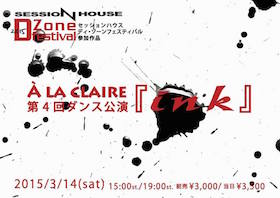
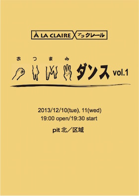

2012年6月、主宰の榑松朝子の声かけにより結成したダンスユニット。
ダンスカンパニーの方向性が多様化する中、「舞台芸術としてのダンス」として、真正面からダンスの可能性に挑むと共に、世の中を電信柱の隙間から覗き見ているような幼くも鋭い感性を、強くしなやかな身体にのせて、独自の世界と物語をダンスでつくりだす。
作品


略歴
2012
- 第1回ダンス公演『living』
2013
- 第2回ダンス公演『群青シーカー』
2014
- 第3回ダンス公演『その窓の向こうに その夏の向こうに』
2014
- 第4回ダンス公演『ink』